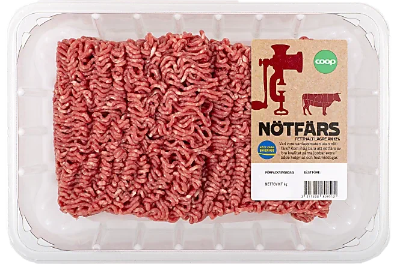
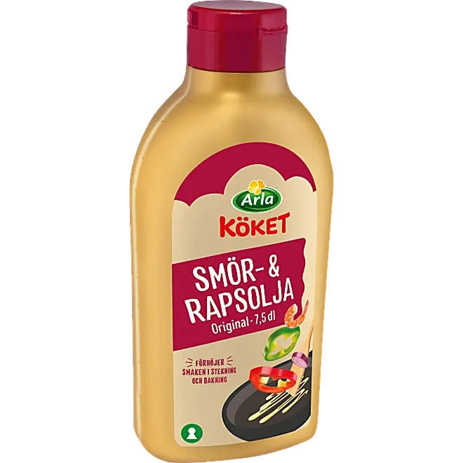
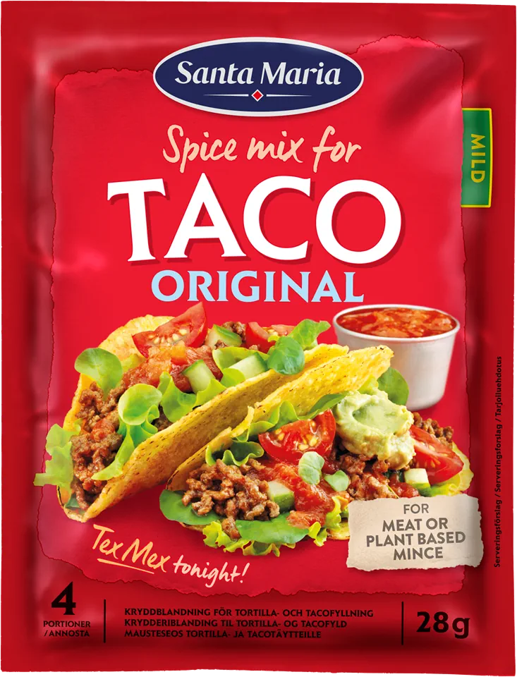
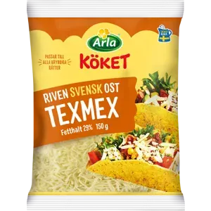
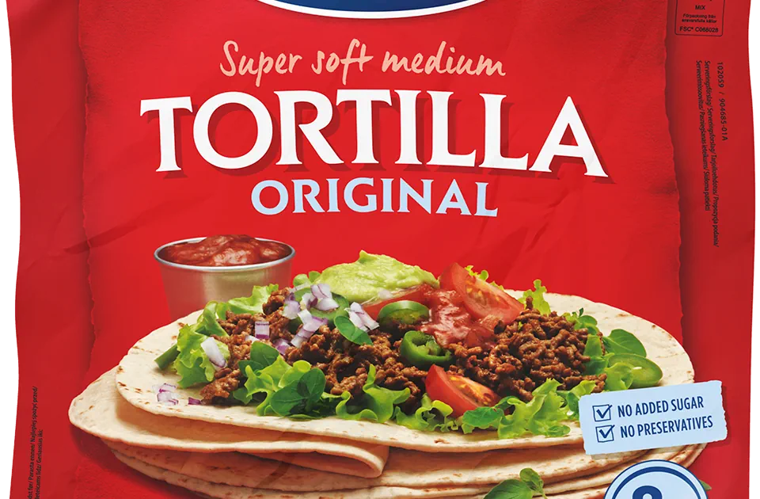
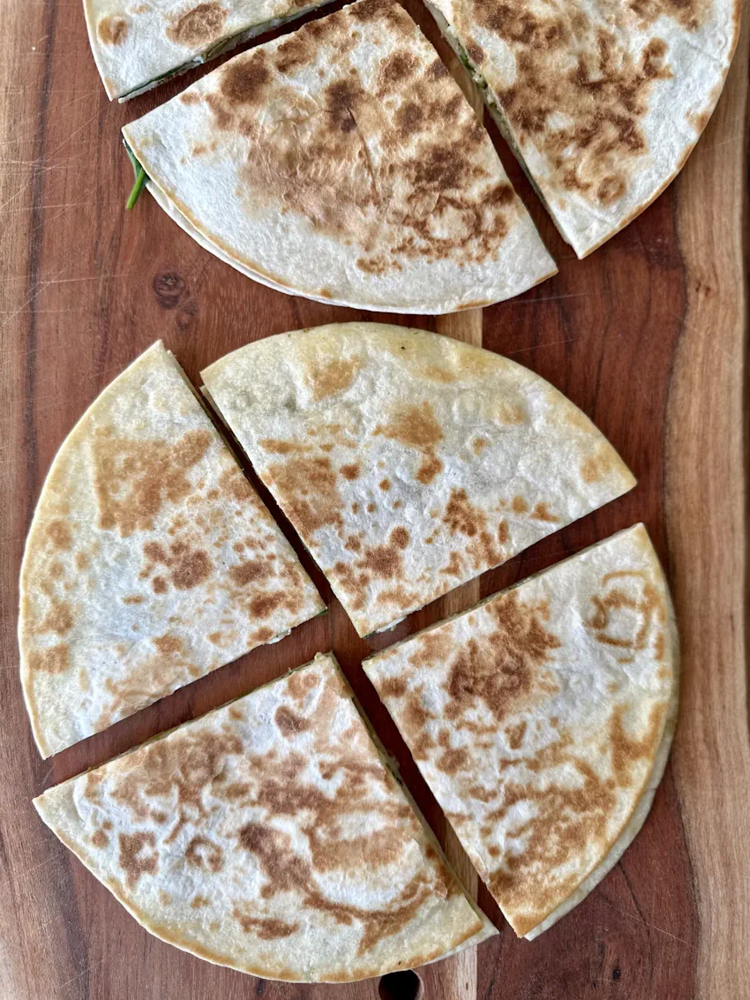
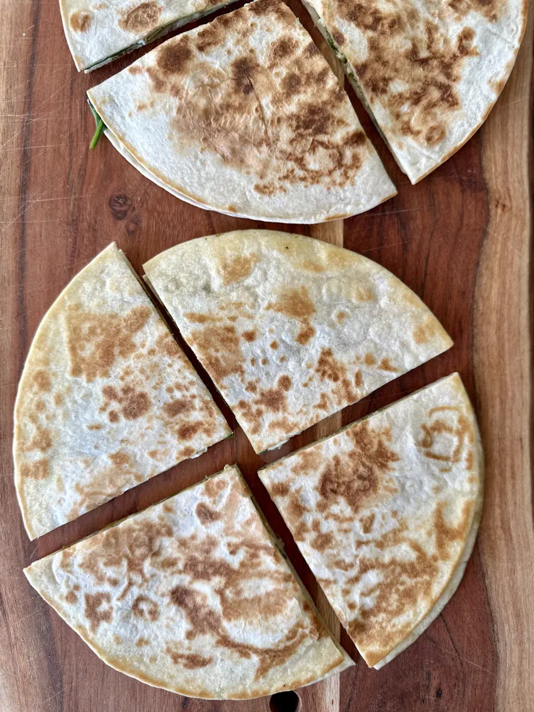

Ingredienser
- 500 g köttfärs 
- 4 msk smör eller matolja 
- 1 paket tacokrydda 
- 3 dl riven ost 
- 8 tortillabröd 
Quesadilla Recept
- Förbered fyllningen: Om du vill ha extra fyllning i din quesadilla, hacka paprika och förbered andra ingredienser som majs, jalapeños eller bönor. Håll mängden fyllning liten så att quesadillan inte blir svår att stänga.
- Lägg ut tortillan och fyll: Lägg en tortilla på en skärbräda eller ren yta. Strö ett lager ost över halva tortillan. Tillsätt önskad fyllning ovanpå osten – kom ihåg att inte överfylla!
- Vik tortillan: Vik tortillan på mitten över fyllningen så att den blir en halvcirkel.
- Stek quesadillan: Hetta upp en stekpanna på medelhög värme och tillsätt lite olivolja eller en klick smör. När pannan är varm, lägg försiktigt i quesadillan.
- Stek till gyllenbrun: Stek quesadillan i 2-3 minuter på varje sida, eller tills den är gyllenbrun och knaprig, och osten har smält inuti. Var försiktig när du vänder, så att fyllningen stannar på plats.
- Ta upp och skär: Ta bort quesadillan från pannan och låt den vila i några sekunder. Skär sedan i trekanter med en kniv eller pizzaskärare.
- Servera: Servera dina quesadillas varma med valfria tillbehör som guacamole, gräddfil, salsa eller en klick crème fraîche.
Quesadillas är en snabb, näringsrik och smakrik måltid som passar perfekt för unga vuxna i storstäder.
De är enkla att laga, flexibla att anpassa efter olika smaker och idealiska för den hälsomedvetne som söker en lättlagad och internationell rätt.
Med ingredienser som ost, grönsaker och protein blir quesadillas en balanserad och mättande måltid. De fungerar lika bra som ett snabbt mellanmål som en komplett middag.
Serverade med tillbehör som guacamole, salsa eller gräddfil, blir rätten ännu mer smakrik och varierad – perfekt för en hektisk livsstil med fokus på enkelhet och njutning.
.webp) 
